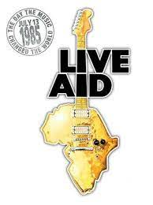

The Queen's King |
|
Anasayfa | Freddie Mercury Hayatı | The Queen şarkıları | Live Aid Konseri | Hakkında Söylenenler | Kaynakça |
Live Aid Konseri
Live Aid, 13 Temmuz 1985 Cumartesi günü gerçekleşen iki mekânlı bir konser ve müzik tabanlı bağış toplama girişimidir. Etkinlik Bob Geldof ve Midge Ure tarafından, hâlen devam etmekte olan Etiyopya'daki açlığa yardım fonu toplamak amacıyla düzenlenmiştir. "Küresel müzik kutusu" olarak duyurulan konser, eş zamanlı olarak, 72.000 kişinin katıldığı, Londra'daki Wembley Stadyumu'nda ve yaklaşık 100.000 kişinin katıldığı, Pensilvanya'daki (ABD) John F. Kennedy Stadyumu'nda gerçekleştirilmiştir. Aynı gün, bu girişimin ilham verdiği konserler Sovyetler Birliği, Kanada, Japonya, Yugoslavya, Avusturya, Avustralya ve Batı Almanya gibi diğer ülkelerde de gerçekleştirildi. Tüm zamanların en geniş çaptaki uydu bağlantılarından ve televizyon yayınlarından biri oldu; 150 ülke genelinde yaklaşık 1,9 milyar seyirci, yani dünya nüfusunun yaklaşık %40'ı Live Aid canlı yayınını izledi. Canlı Yardımın kıtlıktan kurtulma üzerindeki etkisi yıllardır tartışılageldi. Bir yardım görevlisi, konser tarafından oluşturulan tanıtımın ardından, batı hükûmetleri için "insani kaygının şimdi dış politikanın merkezinde olduğunu" belirtti. Geldof, “Politik gündemde yeri olmayan bir sorunu ele aldık ve gezegenin lingua franca'sı (ortak dil) aracılığıyla - İngilizce değil ama rock 'n' roll'la - ahlaksızlığı ve entelektüel saçmalığı ele alabildik.” Live Aid, "kalıcı ve kendiliğinden devam eden bir şey yarattı" diye ekledi, ancak Afrika'nın neden daha da zayıfladığını da sordu. Live Aid organizatörleri, yeteri kadar başarı elde etmemelerine rağmen, Etiyopya'daki sivil toplum kuruluşlarına milyonlarca pound sevk ederek yardım çabalarını yürütmeye çalıştılar; bunların çoğu Etiyopya iktidarındaki Mengistu Haile Mariam'a gitti ve silahlara harcandı. Live Aid Konserini izlemek için tıklayınız  |
| © Copyright 2021 |